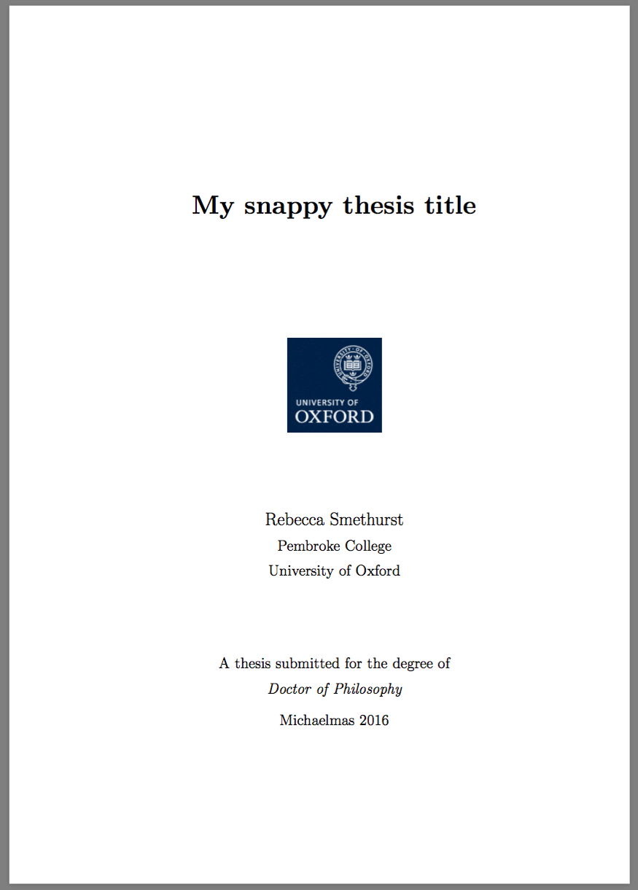
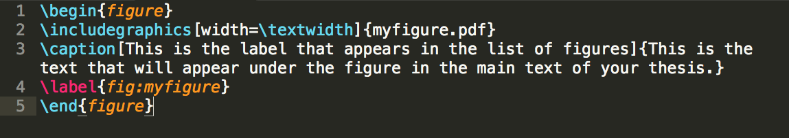
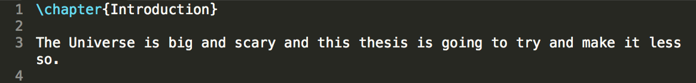
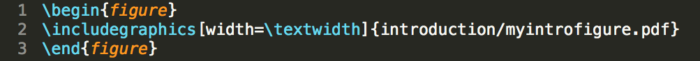
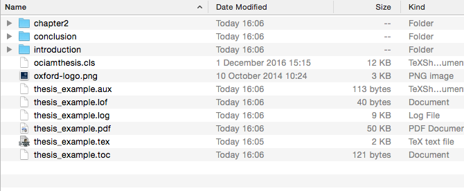
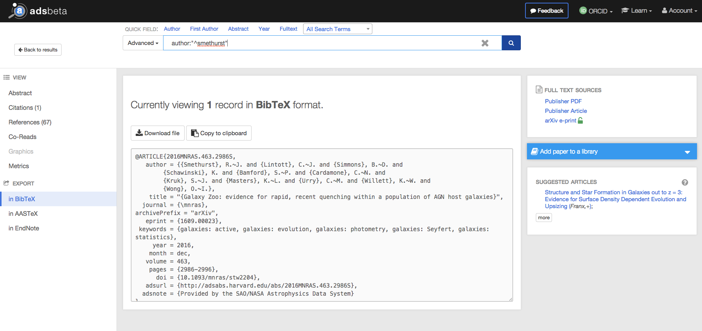
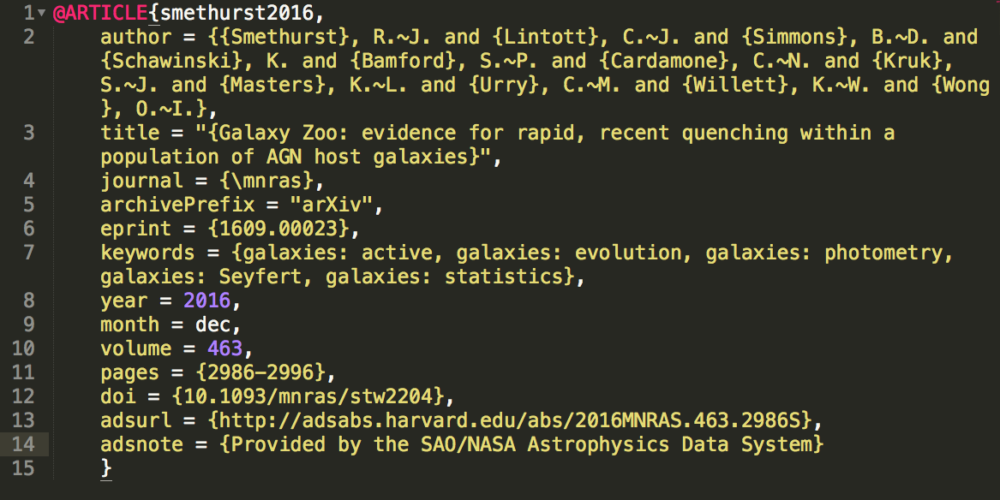
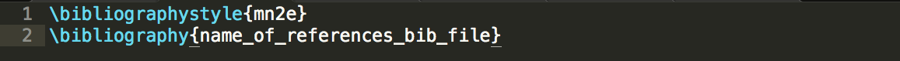
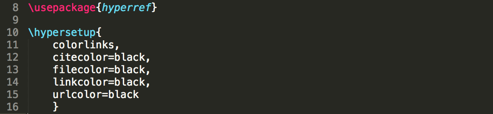

The Hitchiker's Guide to Writing your Thesis
So you’re finally writing up your thesis. Congratulations! Or commiserations? I’m not entirely sure which one it should be. Anyway, this post is going to be particularly relevant to Oxford Astrophysics PhD students, but whoever you are reader, I hope this is useful to you.
First of all, if you’ve started writing, make sure you’ve also filled in this form - it’s the one bit of admin that’s needed to tell Exam Schools what your thesis title will be and, more importantly, what date you’ll be handing it in on. Take it to Ashling and she’ll make sure it gets signed by all the people it needs to and sent to the right admin office to get filed. Once that date is set, it can be changed if necessary but otherwise burn that date in your memory because everything you do from now on is going to lead up to then.
Next up, LaTeX template! The template you want is called ociamthesis.cls and is available here. All the guidelines for page margins, font size (12pt) and double spaced lines which are listed on the Physics website are already coded into the template so you don’t have to worry about a thing. It even provides the University of Oxford logo for your title page, which should look something like this:
On your title page you need: your thesis title, your name, college and institution. You also need what degree you're submitting your thesis for and in which term. The Physics website also states that a thesis needs to be no more than 250 pages (unless you're a theoretical physics student) so don't waffle too much. You’ll then need an abstract, your acknowledgements and what’s called a statement of originality. Which should read something like this (heavily paraphrased):
“I carried out the work in this thesis at the Department of Blah, University of Blah between Month Year and Month Year under the supervision of Dr. Supervisor. My research was funded by this grant. I declare that no part of this thesis has been submitted in support of another degree, diploma or other qualification at the University of Blah or any other university. Except where otherwise stated, the work in this thesis is all mine."
At this point in my thesis I also stated which of my chapters were based on already published papers; including that is up to you. You can also make a statement about the copyright belonging to you, the author: “No quotation from this thesis may be published without prior consent or acknowledgement of its author."
The LaTeX template with then add your Contents and a List of Figures before jumping into the main thesis text. The List of Figures will be made from your figure captions. You can have both the main figure caption and a label that can go in your list of figures like this:
You’re probably also thinking that your thesis.tex file is going to get ridiculously long whilst you keep on churning out those words. Well don’t panic, there’s a better way. There’s a nifty little command \include which you can use to insert an entire .tex file into your thesis.tex file. For example, if you’re writing your introduction you might do that in a separate introduction.tex file and then in your thesis.tex file you can put the command:
\include{introduction}
Your introduction.tex file doesn’t need to have any of the messy package import commands that your thesis.tex file has at the top, you can just jump write in and start writing:
And you can do this for all of your chapters. In theory it makes it easier to get down to writing. When you want to update your thesis.pdf file then you’d still compile your thesis.tex file no matter which chapter.tex file you’d been editing. I liked to keep my thesis folder organised so that each chapter was a separate folder with the chapter.tex file and all of the figures for that chapter. If you decide to do this too then when you include chapters in your main thesis file you’d need to put \include{name_of_folder/name_of_chapter_tex_file} like so:
\include{introduction/introduction}
Similarly when you’re inserting a figure:
You’re thesis folder then ends up looking a bit like this:
References work the same way as in a paper or first & second year reports. The easiest way to do this is have a references.bib file which contains all of the bibtex codes for the papers you cite. They’re really easy to obtain from ADS, each time you find a paper there’s always a button for getting the bibtex citation:
Copy this bibtex code into your references.bib file and change the bib code to something more memorable. I usually go for author’s last name followed by the year, e.g. for the example above:
which I’d cite in my thesis as normal like this:
\cite{smethurst2016}
To insert your list of references into your thesis you use the command:
\bibliography{name_of_references_bib_file}
If you want your references to appear in your bibliography the same as they do in your normal journal, then use your journal of choice's .bst bibliography style file (e.g. for MNRAS this is mn2e.bst and is available here) and include the command:
And, if you want references in the main text to look like they do in a MNRAS/ApJ/A&A paper then you’ll also need to load the natbib package at the top of your thesis.tex file:
\usepackage{natbib}
If you also want your references to be hyperlinks to your bibliography then also load the hyperref package and edit the following colours as you like:
Remember that thesis chapters are much more detailed than a published paper. Saying things like: "Such an investigation is outside the scope of this work" is not going to hold up well in a viva. Your examiners are going to want to know why that was the case. Think of your thesis as your reference guide when you're in your viva. If you put an equation in your thesis could you derive it from first principles if your examiners asked? If the answer is no, put the derivation in! Ideally, you want the answer to any question your examiners could possibly ask you already written in your thesis.
So that's all the technical hoo-ha out of the way. Now, here's a list of things that worked for me whilst writing:
- Having many mini-deadlines that you set with your supervisor. I worked out I had 9 weeks until my hand-in date and 7 chapters to write. So I set a deadline to give my supervisor a new chapter to read and comment on every Friday, with a full draft a week before my deadline. This helped me to focus on a specific chapter each week and allowed me some down time on the weekends.
- Using a to-do list system that helped me keep on top of things. Previously I've used Wunderlist or Evernote to keep track of things, but I recently discovered the Bullet Journalling system which really worked for me. I like to call this procrastinorganisation.
- On the subject of procrastinating, you are going to find yourself trying to procrastinate a lot whilst writing. If you find yourself having a bad morning, give into that and schedule yourself the time to do something that takes no brain power. Just accept that you'll have to pick up the slack later on.
- Accept that you'll probably procaffeinate or procrastineat. I was the latter. Don't try and change your habits when you've got a thesis deadline looming. Accept the fact that you might have to fight caffeine withdrawal or lose the weight you gained at a later date. But don't worry about that now.
- Schedule some downtime. You can't work all day every day for weeks on end. Making plans with friends will not only keep you sane but also keep you motivated to have finished certain tasks before meeting up with them.
Ok, so maybe now you’ve finished writing up your thesis (or maybe you’re just wishing you had) - what next? By the rules of the University, you have to submit 2 copies to exam schools for each of your examiners, one internal, one external, which your supervisor will sort out and speak with them about setting a date for your viva. These copies of your thesis have to be printed single sided and soft bound: which means the pages are glued together and have a bit of thick paper at the back and a transparency at the front. Don’t worry, you don’t have to do this yourself - take it to the Oxford Print Centre on Hollywell Street; they know all about the University regulations and they’ll only charge you £6 per copy. They promise to bind your thesis in under an hour but I rang ahead and checked with them that was still possible on the day I was planning to get mine bound.
Then you need to take your thesis to Exam Schools. The main entrance is on the High Street and the hand-in area is just on the right hand side. There’s guidelines for undergraduate submissions, which you should ignore, and instead focus on the postgraduate guidelines. You need to fill in a little form with your name and thesis title, then put each of the copies of your thesis into its own envelope. You can get these envelopes from the nice guys in the Physics stores down on Level 3 (you know, the stationary wonderland); they’ve been giving them out for years so know exactly what to give you. The nice person on the Exam Schools desk will then take your theses from you and promise to deliver them to your examiners. You’ll get an email confirming that you’ve handed in and when the theses have been sent.
After that, get down to the Lamb & Flag for a well earned tipple.
Remember, that all of this information is available on the University of Oxford research examination website and you should always check there for the official guidelines.